Hello, my name is Rowan!Cloud-native cloud datasets
Rowan Orlijan-Rhyne
2026-12-01
I was here before!
- Thanks for teaching me!
- Where is P3 now?
as a guest, it’s important to me to (at least try to) speak the language
but here, it’s English…
or is it??
even better:
The Barbados Cloud Observatory (BCO)
interest in the tropics
- the tropics drive Earth’s energetics and large scale circulations

let’s go to the Atlantic

clouds over the Atlantic

NASA GOES
clouds over the Atlantic

clouds over the Atlantic
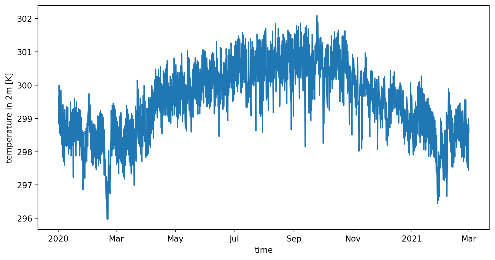
BCO
Half a climate at the BCO
est. Dec 2010

instruments measuring clouds, rain, radiation, surface meteorology…

my job: make BCO datasets 1
weather and climate data wrangling
- individual, painstaking processing
- or if the data is processed, it is:
- private
- (down)loaded eagerly
- not versioned, hashed, content-addressable
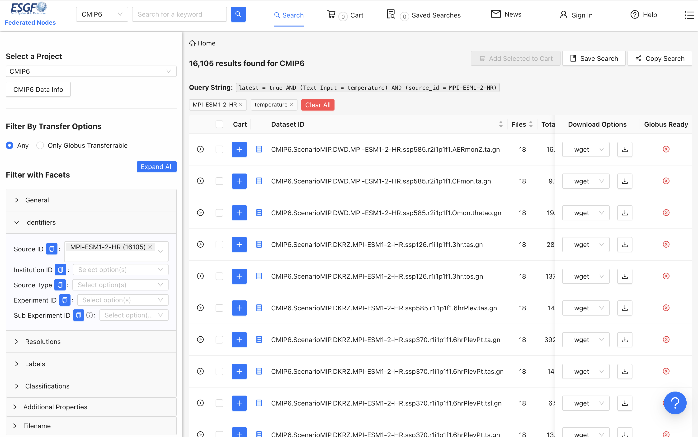
downloads a shell script
all of this to download 18 netcdfs
download_files="$(cat <<EOF--dataset.file.url.chksum_type.chksum
'ta_AERmonZ_MPI-ESM1-2-HR_ssp585_r2i1p1f1_gn_201501-201912.nc' 'http://esgf3.dkrz.de/thredds/fileServer/cmip6/ScenarioMIP/DWD/MPI-ESM1-2-HR/ssp585/r2i1p1f1/AERmonZ/ta/gn/v20190710/ta_AERmonZ_MPI-ESM1-2-HR_ssp585_r2i1p1f1_gn_201501-201912.nc' 'SHA256' '8e44799f025076eca06db7ed7e811a54dba59fd8b6c9b436cca64a08ea9337fc'
'ta_AERmonZ_MPI-ESM1-2-HR_ssp585_r2i1p1f1_gn_202001-202412.nc' 'http://esgf3.dkrz.de/thredds/fileServer/cmip6/ScenarioMIP/DWD/MPI-ESM1-2-HR/ssp585/r2i1p1f1/AERmonZ/ta/gn/v20190710/ta_AERmonZ_MPI-ESM1-2-HR_ssp585_r2i1p1f1_gn_202001-202412.nc' 'SHA256' '29c416b8a940aba48212dffc461ecaca1408419eee29860d64bc3efea86d75b0'
'ta_AERmonZ_MPI-ESM1-2-HR_ssp585_r2i1p1f1_gn_202501-202912.nc' 'http://esgf3.dkrz.de/thredds/fileServer/cmip6/ScenarioMIP/DWD/MPI-ESM1-2-HR/ssp585/r2i1p1f1/AERmonZ/ta/gn/v20190710/ta_AERmonZ_MPI-ESM1-2-HR_ssp585_r2i1p1f1_gn_202501-202912.nc' 'SHA256' '8c8208aec60aacc91affce87a986f61a569dbdd110a61828d05a95ea832c38e2'
'ta_AERmonZ_MPI-ESM1-2-HR_ssp585_r2i1p1f1_gn_203001-203412.nc' 'http://esgf3.dkrz.de/thredds/fileServer/cmip6/ScenarioMIP/DWD/MPI-ESM1-2-HR/ssp585/r2i1p1f1/AERmonZ/ta/gn/v20190710/ta_AERmonZ_MPI-ESM1-2-HR_ssp585_r2i1p1f1_gn_203001-203412.nc' 'SHA256' '1c25d3005850a1bca7ea65e2b69a9273d6222683f6faf2e91f267b4dae483f85'
'ta_AERmonZ_MPI-ESM1-2-HR_ssp585_r2i1p1f1_gn_203501-203912.nc' 'http://esgf3.dkrz.de/thredds/fileServer/cmip6/ScenarioMIP/DWD/MPI-ESM1-2-HR/ssp585/r2i1p1f1/AERmonZ/ta/gn/v20190710/ta_AERmonZ_MPI-ESM1-2-HR_ssp585_r2i1p1f1_gn_203501-203912.nc' 'SHA256' '70e62190627b04b6c06d8c2cccc419d5816f8cfc5fb7a36c67faac46825b8fc1'
'ta_AERmonZ_MPI-ESM1-2-HR_ssp585_r2i1p1f1_gn_204001-204412.nc' 'http://esgf3.dkrz.de/thredds/fileServer/cmip6/ScenarioMIP/DWD/MPI-ESM1-2-HR/ssp585/r2i1p1f1/AERmonZ/ta/gn/v20190710/ta_AERmonZ_MPI-ESM1-2-HR_ssp585_r2i1p1f1_gn_204001-204412.nc' 'SHA256' 'dd51584cbbef310e75462b11e9346456fd616d5e668a8b7ff1f1aa5daa8802e5'
'ta_AERmonZ_MPI-ESM1-2-HR_ssp585_r2i1p1f1_gn_204501-204912.nc' 'http://esgf3.dkrz.de/thredds/fileServer/cmip6/ScenarioMIP/DWD/MPI-ESM1-2-HR/ssp585/r2i1p1f1/AERmonZ/ta/gn/v20190710/ta_AERmonZ_MPI-ESM1-2-HR_ssp585_r2i1p1f1_gn_204501-204912.nc' 'SHA256' '19ff152622b2f83e62b264d66bb35f638d4ab49be83477ef7633e5537bba6793'
'ta_AERmonZ_MPI-ESM1-2-HR_ssp585_r2i1p1f1_gn_205001-205412.nc' 'http://esgf3.dkrz.de/thredds/fileServer/cmip6/ScenarioMIP/DWD/MPI-ESM1-2-HR/ssp585/r2i1p1f1/AERmonZ/ta/gn/v20190710/ta_AERmonZ_MPI-ESM1-2-HR_ssp585_r2i1p1f1_gn_205001-205412.nc' 'SHA256' '20af86e46c848c1be03e5deafdf1309f07b7016381e4a9ecedfdbc8ce94df2ca'
'ta_AERmonZ_MPI-ESM1-2-HR_ssp585_r2i1p1f1_gn_205501-205912.nc' 'http://esgf3.dkrz.de/thredds/fileServer/cmip6/ScenarioMIP/DWD/MPI-ESM1-2-HR/ssp585/r2i1p1f1/AERmonZ/ta/gn/v20190710/ta_AERmonZ_MPI-ESM1-2-HR_ssp585_r2i1p1f1_gn_205501-205912.nc' 'SHA256' '835ab27a12d83464afd4fdd1528cfe800895006a2f2739da2c10b4985acf4ee1'
'ta_AERmonZ_MPI-ESM1-2-HR_ssp585_r2i1p1f1_gn_206001-206412.nc' 'http://esgf3.dkrz.de/thredds/fileServer/cmip6/ScenarioMIP/DWD/MPI-ESM1-2-HR/ssp585/r2i1p1f1/AERmonZ/ta/gn/v20190710/ta_AERmonZ_MPI-ESM1-2-HR_ssp585_r2i1p1f1_gn_206001-206412.nc' 'SHA256' '36535020a9e57d9f1b0a53045a9d424f841467b51f2b35004ae2e88c38886b8d'
'ta_AERmonZ_MPI-ESM1-2-HR_ssp585_r2i1p1f1_gn_206501-206912.nc' 'http://esgf3.dkrz.de/thredds/fileServer/cmip6/ScenarioMIP/DWD/MPI-ESM1-2-HR/ssp585/r2i1p1f1/AERmonZ/ta/gn/v20190710/ta_AERmonZ_MPI-ESM1-2-HR_ssp585_r2i1p1f1_gn_206501-206912.nc' 'SHA256' '15d7d05f398b14449404f6c5ef178b930af88c62f5a4c3826a427dd52b60e936'
'ta_AERmonZ_MPI-ESM1-2-HR_ssp585_r2i1p1f1_gn_207001-207412.nc' 'http://esgf3.dkrz.de/thredds/fileServer/cmip6/ScenarioMIP/DWD/MPI-ESM1-2-HR/ssp585/r2i1p1f1/AERmonZ/ta/gn/v20190710/ta_AERmonZ_MPI-ESM1-2-HR_ssp585_r2i1p1f1_gn_207001-207412.nc' 'SHA256' '507764dcda8233f5223b5c6dc09c577f2312b075559c89c5224e2d7bbf2772db'
'ta_AERmonZ_MPI-ESM1-2-HR_ssp585_r2i1p1f1_gn_207501-207912.nc' 'http://esgf3.dkrz.de/thredds/fileServer/cmip6/ScenarioMIP/DWD/MPI-ESM1-2-HR/ssp585/r2i1p1f1/AERmonZ/ta/gn/v20190710/ta_AERmonZ_MPI-ESM1-2-HR_ssp585_r2i1p1f1_gn_207501-207912.nc' 'SHA256' '3a2a1687ff071dec5ef960e9b28a65be584529b71f8756114f28485857fa8e18'
'ta_AERmonZ_MPI-ESM1-2-HR_ssp585_r2i1p1f1_gn_208001-208412.nc' 'http://esgf3.dkrz.de/thredds/fileServer/cmip6/ScenarioMIP/DWD/MPI-ESM1-2-HR/ssp585/r2i1p1f1/AERmonZ/ta/gn/v20190710/ta_AERmonZ_MPI-ESM1-2-HR_ssp585_r2i1p1f1_gn_208001-208412.nc' 'SHA256' '68beb694fc61be818b02772cf77299a67cf032132ab77d8cedd08688d0b88c74'
'ta_AERmonZ_MPI-ESM1-2-HR_ssp585_r2i1p1f1_gn_208501-208912.nc' 'http://esgf3.dkrz.de/thredds/fileServer/cmip6/ScenarioMIP/DWD/MPI-ESM1-2-HR/ssp585/r2i1p1f1/AERmonZ/ta/gn/v20190710/ta_AERmonZ_MPI-ESM1-2-HR_ssp585_r2i1p1f1_gn_208501-208912.nc' 'SHA256' '6cc038ad3a5c513209b28839eeb6fec1b5b402b261c51187470b7ab74161200c'
'ta_AERmonZ_MPI-ESM1-2-HR_ssp585_r2i1p1f1_gn_209001-209412.nc' 'http://esgf3.dkrz.de/thredds/fileServer/cmip6/ScenarioMIP/DWD/MPI-ESM1-2-HR/ssp585/r2i1p1f1/AERmonZ/ta/gn/v20190710/ta_AERmonZ_MPI-ESM1-2-HR_ssp585_r2i1p1f1_gn_209001-209412.nc' 'SHA256' '2ff05ee5e9c888125c931969d3214988e24671bd44493c222f40e1ac5c5a4cb2'
'ta_AERmonZ_MPI-ESM1-2-HR_ssp585_r2i1p1f1_gn_209501-209912.nc' 'http://esgf3.dkrz.de/thredds/fileServer/cmip6/ScenarioMIP/DWD/MPI-ESM1-2-HR/ssp585/r2i1p1f1/AERmonZ/ta/gn/v20190710/ta_AERmonZ_MPI-ESM1-2-HR_ssp585_r2i1p1f1_gn_209501-209912.nc' 'SHA256' '4835be984f99cabadac7539d35e350f81d658655d8d513ab421799caca81bac2'
'ta_AERmonZ_MPI-ESM1-2-HR_ssp585_r2i1p1f1_gn_210001-210012.nc' 'http://esgf3.dkrz.de/thredds/fileServer/cmip6/ScenarioMIP/DWD/MPI-ESM1-2-HR/ssp585/r2i1p1f1/AERmonZ/ta/gn/v20190710/ta_AERmonZ_MPI-ESM1-2-HR_ssp585_r2i1p1f1_gn_210001-210012.nc' 'SHA256' '15e2fa8c6ed13c4cad79a17186da66c06e23da886397a30a4c47119a405449fd'
EOF--dataset.file.url.chksum_type.chksum
)"our philosophy: burden on the provider, not users
- analysis-ready, cloud-optimized (ARCO) datasets1
- zarr format on a publicly available object store
- versioned and reproducible processing

continuously-growing datasets
- model data: consistent dimensions, no artifacts
- campaign data: more heterogeneous, but no new measurements
implementation
automated workflows using Apache Airflow’s direct acyclic graphs (DAGs)
each dataset:
- versioned with its processing code and that of its input datasets -> unique object ID
- reproducible
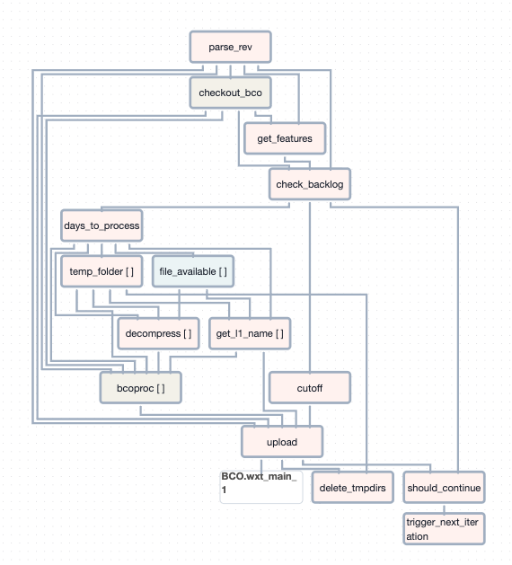
data hierarchy and products
flowchart TD A[raw] --> B[level 1 - concatenate & clean] B --> C[level 2 - analysis-ready] C --> D[level 2 - time aggregations] D --> E[level 3 - multi-sensor products]
datasets: a tasting menu
data access
import intake
cat = intake.open_catalog("https://tcodata.mpimet.mpg.de/catalog.yaml")
print(len(list(cat.BCO)))
pprint(list(cat.BCO), width=120, compact=True)101
['HATPRO_BRT', 'HATPRO_HKD', 'HATPRO_IWV', 'allsky_csv', 'allsky_netcdf', 'bucket_WAD_c1_v1', 'ceilometer_c1',
'ceilometer_c1_v1', 'ceilometer_c2', 'ceilometer_c2_v1', 'ceilometer_c3', 'cloudradar', 'coral_app_hr', 'coral_app_lr',
'dewpoint', 'katrin_c1', 'katrin_c2', 'katrin_c3', 'katrin_c4', 'katrin_c5', 'katrin_c6', 'katrin_c7',
'lidar_CORAL_LR_b_c1_v1', 'lidar_CORAL_LR_t_c1_v1', 'lidar_CORAL_calib_v1', 'lidar_CORAL_hr_f_c1',
'lidar_CORAL_hr_s_c1', 'lidar_CORAL_lowres_calib_v1', 'lidar_CORAL_lr_f_reanalysis_c1', 'lidar_CORAL_lr_f_rolling_c1',
'lidar_CORAL_lr_s_reanalysis_c1', 'lidar_CORAL_lr_s_rolling_c1', 'lidar_EARLI_LR_b_c1_v1', 'lidar_EARLI_LR_b_c2_v1',
'lidar_EARLI_LR_b_c3_v1', 'lidar_EARLI_LR_e_c1_v1', 'lidar_EARLI_LR_e_c3_v1', 'lidar_EARLI_LR_t_c1_v1',
'lidar_LICHT_LR_b_c1_v1', 'lidar_LICHT_LR_b_c2_v1', 'lidar_LICHT_LR_t_c1_v1', 'lidar_LICHT_LR_t_c2_v1',
'lidar_LICHT_calib', 'lidar_LICHT_lr_f_reanalysis_c1', 'lidar_LICHT_lr_f_reanalysis_c2', 'lidar_LICHT_lr_f_rolling_c1',
'lidar_LICHT_lr_f_rolling_c2', 'lidar_LICHT_lr_s_reanalysis_c1', 'lidar_LICHT_lr_s_reanalysis_c2',
'lidar_LICHT_lr_s_rolling_c1', 'lidar_LICHT_lr_s_rolling_c2', 'mbr2_c1', 'mbr2_c2', 'mbr2_c3', 'mbr2_c4', 'mbrs',
'mbrs_spectra', 'mrr', 'mrrpro', 'parsivel_451995', 'parsivel_451996', 'parsivel_451997', 'radar_KATRIN_c1',
'radar_MBR2_c1_v1', 'radar_MBR2_c2_v1', 'radar_MBR2_c3_v1', 'radar_MBR2_c4_v1', 'radar_MBRS_c1_v1', 'radiation',
'radiation_c1', 'radiation_c2', 'radiation_l2', 'radiometer_HATPRO_BRT_c1_v1', 'radiometer_HATPRO_HKD_c1_v1',
'radiometer_HATPRO_IWV_c1_v1', 'raingauge', 'rumba_c1', 'rumba_c2', 'rumba_c3', 'rumba_c4', 'rumba_c5', 'surfacemet',
'surfacemet2', 'surfacemet_hc2a', 'surfacemet_hc2a_l2', 'surfacemet_lidar', 'surfacemet_wxt_lidar', 'verticalwind',
'windlidar1_c1', 'windlidar1_c1_v1', 'windlidar1_c2', 'windlidar1_c2_v1', 'windlidar1_c3', 'windlidar1_c3_v1',
'windlidar1_config', 'windlidar2_c1', 'windlidar2_c1_v1', 'windlidar2_c2', 'windlidar2_c2_v1', 'windlidar2_config',
'wxt']surface meteorology
surface meteorology

rain

cloud atlas
ds = cat.BCO.cloudradar(time="P1D").to_dask()
ds.cloud_fraction.sel(time=ds.time.dt.month.isin([1, 2, 3])).mean(dim="time").plot(y="alt", label="JFM", **line_args)
ds.cloud_fraction.sel(time=ds.time.dt.month.isin([9, 10, 11])).mean(dim="time").plot(y="alt", label="SON", **line_args_acc)
plt.title("Z > -40 dBZ", **axis_labels)
plt.ylabel("alt / m", **axis_labels)
plt.xlabel("cloud fraction / 1", **axis_labels)
plt.legend()
plt.show()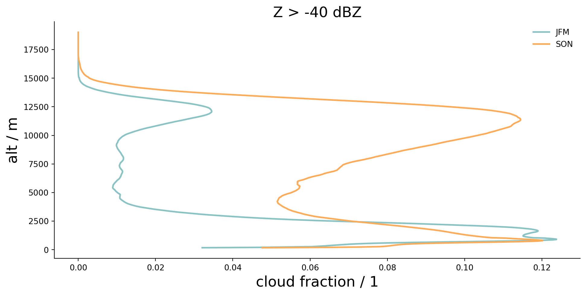
cloud atlas

cloud atlas

a short tour: cloud atlas

cloud atlas
cloud atlas
cloud atlas
science at the MPI-M
1
a brief investigation 🧐
missing: 2024 winter
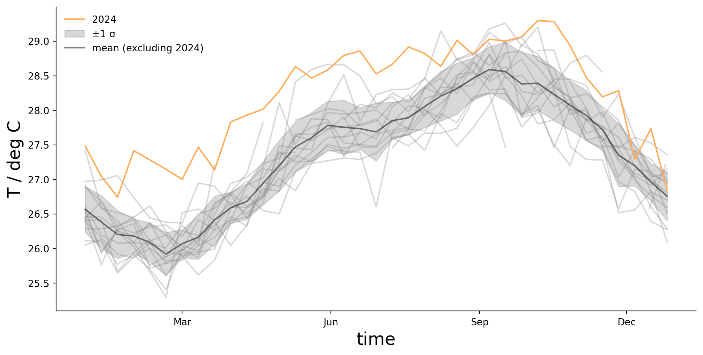
missing high clouds
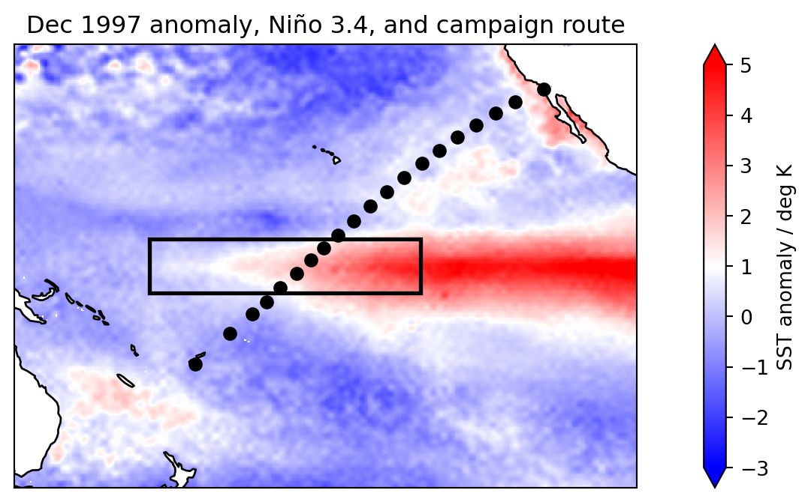
missing high clouds
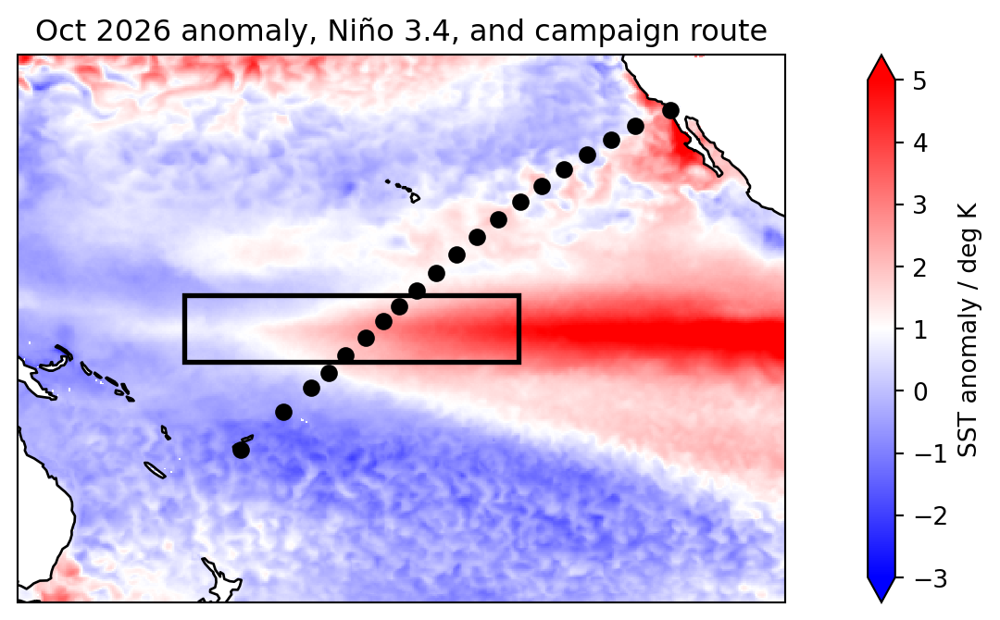
high and low cloud fraction & anomalies
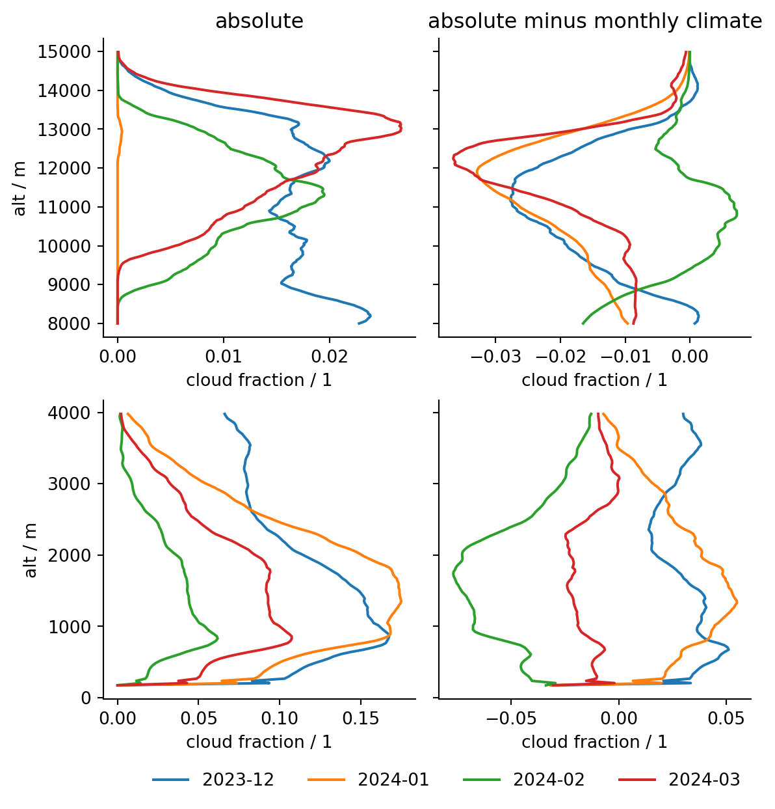
trough in subtropical westerly jet
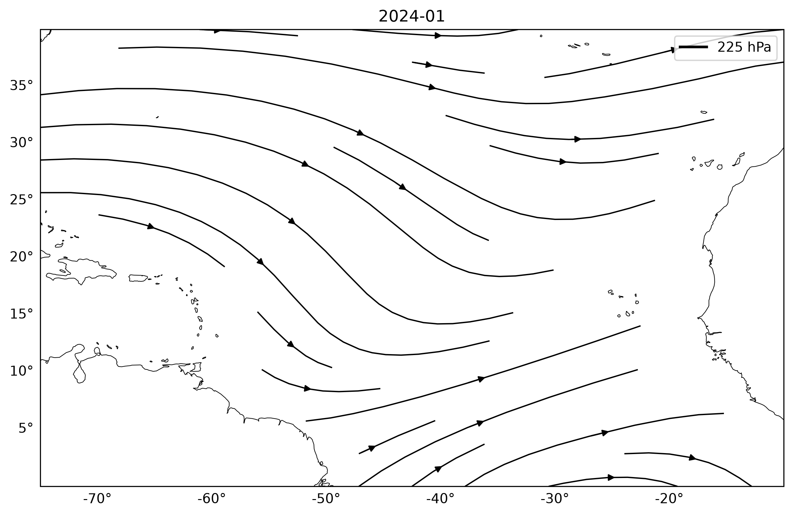
mechanisms
- warm SSTs & upper-level subsidence
- dry upper levels (chicken or egg?)
- warm air cannot entrain as much (?)
- next: 1
- moisture advection
- relative humidity (in temperature space)
- other drivers of cirrus cloud amount
- opposite synoptic state
measurement campaign! 🚢
San Diego (Dec 11) to Fiji (Jan 4)
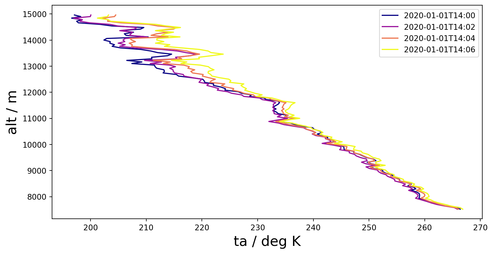
current anomaly
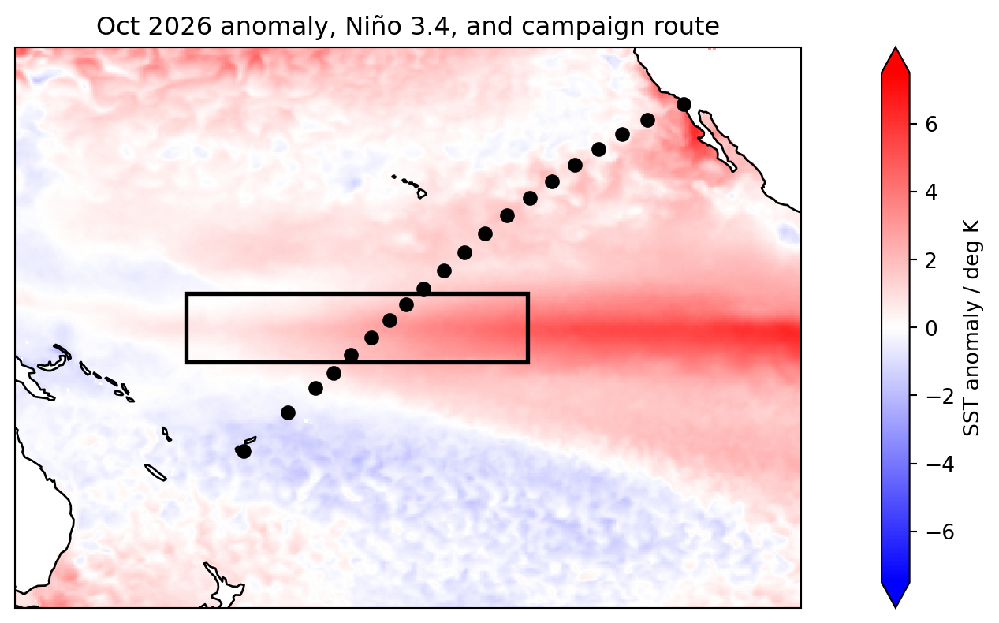
instrumentation
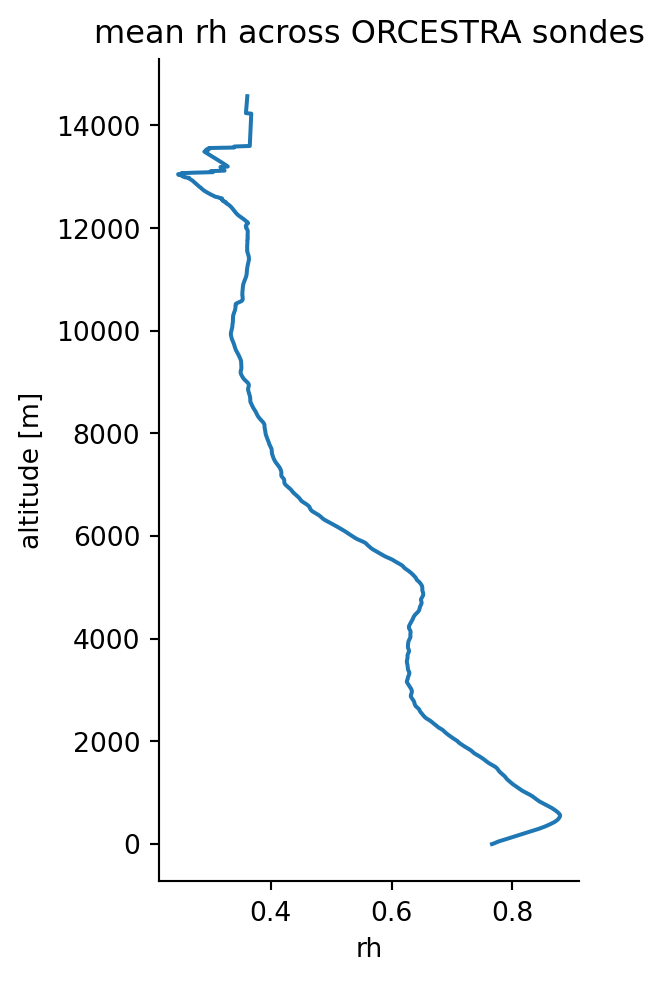
instrumentation
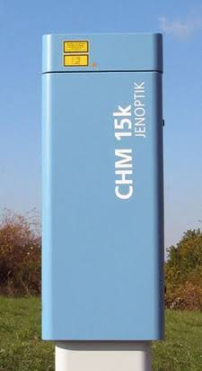
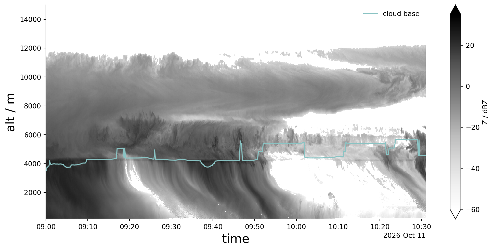
instrumentation
sea snake

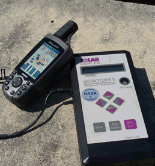
Thanks!
P.S.
- TCO data, ORCESTRA data, model data
- curious about:
- p3 and the model!
- run the bubble with CliMA?
- AI, ML?
- model output formats and storage?
- strong scaling vs ICON?
- convection (parameterization)?
extra: trough in subtropical westerly jet
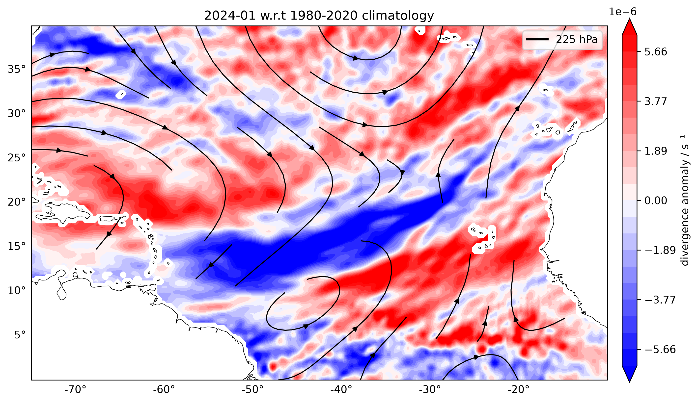
accentuated trough, upstream convergence
extra: DJFM means
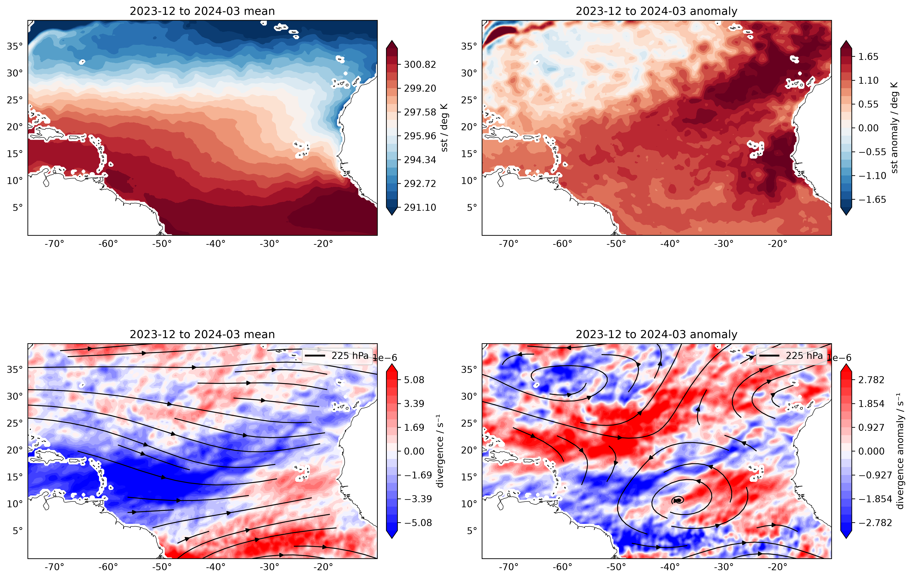
extra: monthly means
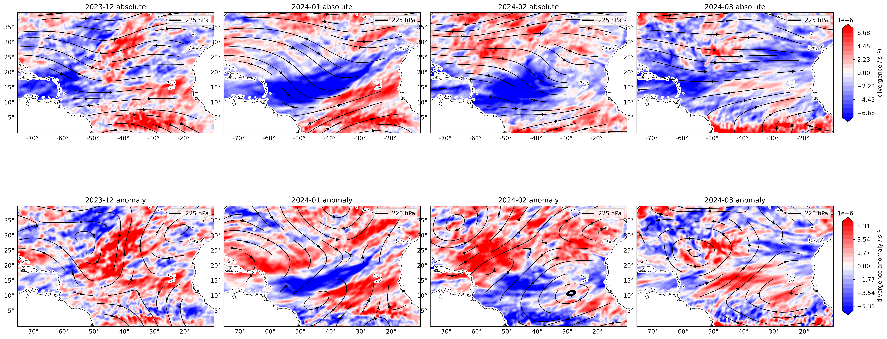
extra: rh (in pressure space)
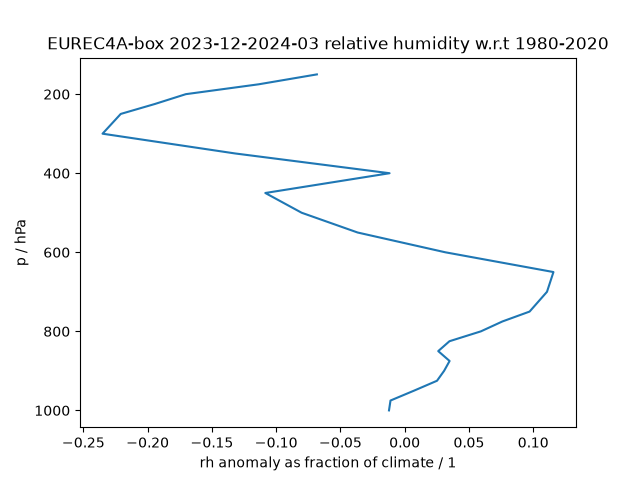
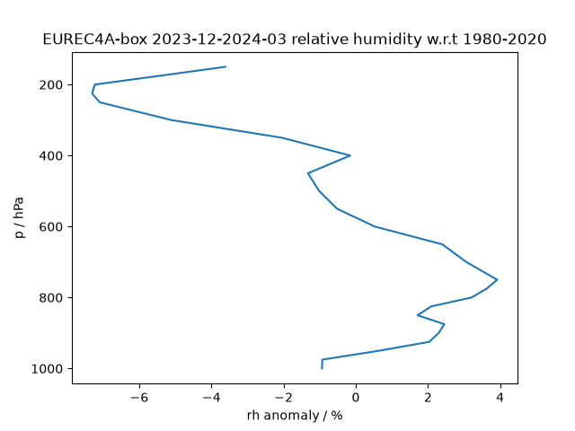
extra: rh (in pressure space)
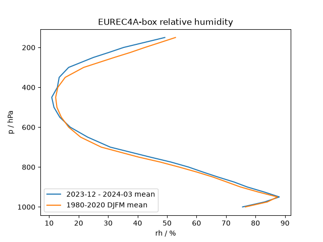
extra: ta
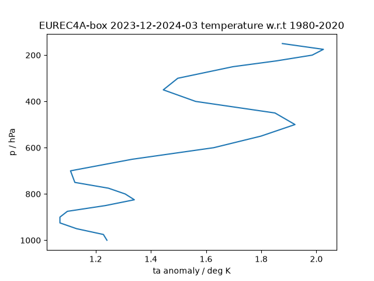